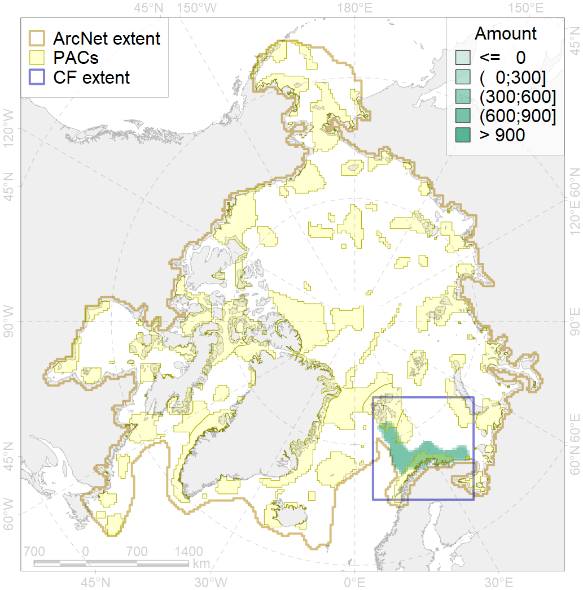

4087

| CF ID | 4087 |
| CF Name | Fish zoogeography, Arctic Region, Subarctic Transitional-Atlantic Province, Murman – Spitsbergen aquatory of the Barents District |
| Time Period | 2019 |
| Source(s) | Chernova, produced for this project |
| Seasonality | January-December |
| Depth Horizon | |
| Methodology | expert opinion based on summarised data of trawl surveys and multiple publications |
| Author Name | N. Chernova |
| Notes | |
| Conservation Target Set in the Scenario | 0.1858497 |
| Conservation Target Achieved in the Scenario | 0.297 (Scenario: 159.6%) |
| PAC ID | Proportion in the PAC | Contribution to ArcNet Target Achievement | PAC’s Contribution to the Achieved Target |
|---|---|---|---|
| 25 | 0.8% | 3.5% | 2.2% |
| 27 | 23.3% | 98.7% | 61.8% |
| 30 | 3.5% | 17.6% | 11.0% |
| 31 | 2.0% | 10.3% | 6.5% |
| inner | 29.6% | 130.2% | 81.5% |
| outer | 70.4% | 29.5% | 18.5% |